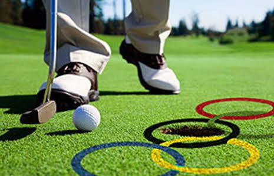

GOLF AT OLYMPICS
|  |
GOLF WAS FEATURED IN THE SUMMER OLYMPIC GAMES OFFICIAL PROGRAMME IN 1900 AND 1904. AT THE IOC SESSION IN COPENHAGEN IN OCTOBER 2009, THE IOC DECIDED TO REINSTATE THIS EVENT FOR THE 2016 SUMMER OLYMPICS. AS OF THE 2016 OLYMPICS, QUALIFICATION IS BASED PRIMARILY UPON THE OFFICIAL WORLD GOLF RANKING (MEN) AND WOMEN'S WORLD GOLF RANKINGS, WITH THE TOP FIFTEEN OF EACH GENDER AUTOMATICALLY QUALIFYING (WITH A LIMIT OF FOUR PER COUNTRY), AND THEN THE HIGHEST RANKED PLAYERS FROM COUNTRIES THAT HAD NOT YET ALREADY QUALIFIED TWO PLAYERS.